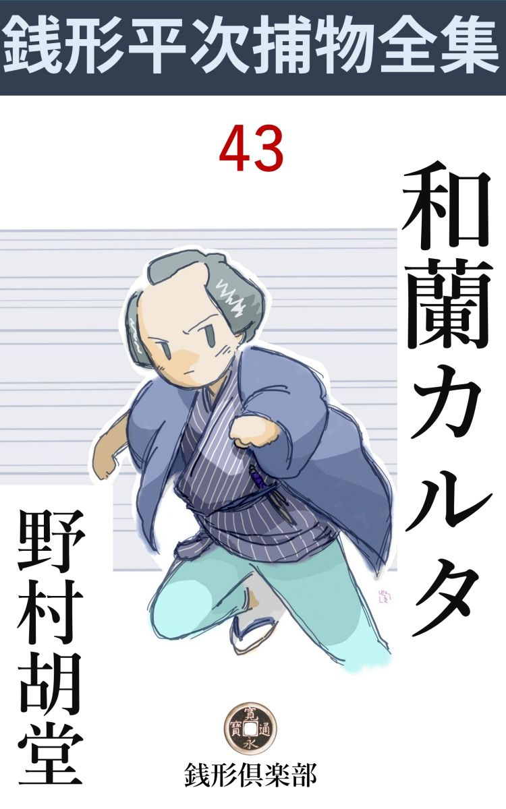
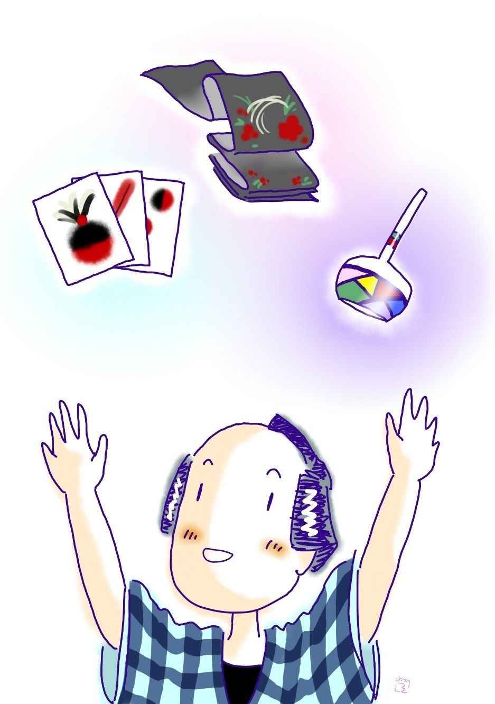

| 和蘭カルタ: 銭形平次捕物全集第43話 (銭形倶楽部) | |
| 野村胡堂 | |
| ZENIGATA CLUB (2018) | |

一
「親分、子さらい が流行 るんだってネ」
「聞いたよ、憎いじゃないか」
銭形平次は苦い顔をしました。
「赤ん坊ならどこへ連れて行かれても、それっきり判らなくなるかも知れないが、浚 われるのは大概七つ八つから十二三の子だからどんな場所に売られたにしても、土地の役人なり御用聞なりに、名乗って出られそうなものじゃありませんか。江戸だけでも何人あるか知れないが、一人も行方が判らないとは変だねえ、親分」
ガラッ八の八五郎も、時々はこういった上等の知恵を出すこともあったのです。
「だから俺は考えているのさ、相手の見当だけでも付かなきゃア、うっかり手は出せねえ、------だがな八、金や品物を盗られたのなら、働いて取返す術 もあるだろうが、子供を浚われた親の身になって見れば、諦 めようがあるまい。悪事の数も多いが、信 夫 の藤太の昔から、人の子を取るほど罪の深いものはないなア」
銭形平次も妙に感傷的でした。
「女の子だけを浚うなら解っているが、時々男の子を誘 拐 す了簡が解らないじゃありませんか」
八五郎はまだ首を捻 っております。
丁度その時、
「御免下さい、銭形の親分さんはこちらで------」
門口から年配の女の声、平次の女房お静は取次ぎに出た様子です。
「八、また誘拐 らしいぜ」
「どうしてそんな事が判るんで、親分」
「女が二人連れで、こんなに早く御用聞の家へ来るのはよくよくの用事さ」
「へッ、当るも八卦 という奴で」
八五郎はガチャガチャをやる真似をしました。
「金座の勘定役石井平四郎様の御召使が二人でお出でになりました」
お静が取次ぐのを待っていたように、
「到頭俺の縄 張 内 へやって来たのか、よしよしこの辺が乗出しの潮時だろう、丁寧に通すんだよ」
「ハイ」
引返したお静、間もなく二人の女を案内して来ました。
「始めてお目にかかります。私は金座の役人石井平四郎の雇人 、霜と申します。御坊ちゃまの乳母をいたしておりました、これはお附きの小間使い春で御座います」
挨拶をしたのは、四十二三の如何にも実直そうな女、その後ろに小さく控えたのは、十七八の大商人の召使いらしい美しい娘です。
「平次は私で、------どんな御用でしょう」
「大変な事が起りました」
「坊っちゃんが誘 拐 されたんでしょう」
「えッ、ど、どうしてそれを」
「お前さんの顔に書いてある」
「えッ」
お霜の驚きは大袈裟 でした。
「まア、そんな事はどうでもいい、------坊ちゃんの見えなくなった、前後の事を詳 しく聴こうじゃありませんか」
平次の調子には、いろいろの意味が籠 っていそうです。
「こうなんですよ、親分さん、------昨夜戌刻 少し過ぎでした。あんまり暑いんで、お春さんが坊ちゃんを表の縁台で遊ばせていると、昼買った花火が簞笥 の上にあった筈だから、持って来いと仰しゃるんだそうです。店には多勢人が居るし、まだ往来もある頃だから、何の気なしにお家へ入って、花火を捜して持って出ると、ツイ今しがたまで遊んでいた、坊ちゃんの姿が見えないんです」
「手間は取らなかったろうな、お春さん」
平次は乳母の饒舌 を少し持て余したように、側で黙って俯向いているお春を顧みました。
「いえ、ほんの煙草なら三服吸う間でした」
お春は、多い毛を重そうに、こう顔をふり仰ぎました。
申分なく美しい縹緻ですが、何となく弱々しいうちに、肉体とは没交渉 に強い魂を持っていそうな娘です。
「そんな一寸の間に、どこへもいらっしゃる筈は御座いません。それから大騒動をして、町中を捜しましたが、どこにも見当らず、奉公人や、御近所の衆や、お出入りの人達が八方に手をわけて、一と晩寝ずに捜しても悉 皆 行方が解らないんです」
「------」
「もしや、神隠しにでも逢ったんじゃないかという方もありますが、神隠しなら三年五年経って出て来ることもありますが、------あの、この節江戸中の騒ぎになっている、子さらい の手に掛ったら、どうしましょう」
お霜は大きく眼を開いて、ゴクリと固唾 を呑みました。忠義者には相違ないまでも、お春に比べると、何となく神経の鈍 そうな女です。
「大事なことを訊かなかったが、坊ちゃんは幾つで、名は何と言いなさるんだ」
「七つで御座いますよ。勇太郎様と仰しゃって、それはそれはお可愛らしいお子さんで御座いますよ」
お霜は自分の子の事でも言うように誇 らし気でした。少し動物的かも知れませんが、とにかく、自分の育てた子を、この上もなく可愛がっていることは確かです。
「お霜さんは江戸に家があるんだろうね」
「へエ、大根 畑 （本郷新花町）に世帯を持っていましたが、亭主の文七がやくざで三年前に別れてしまいました」
「お春さんは？」
「木更津 で御座います」
「とにかく、やって見るとしよう。子さらい も、長崎や堺 や、大坂から流 行 って来たことで、江戸では品川寄と深川にあっただけだが、俺の縄張うちへ来ちゃ放って置けまい。八、一緒に本町まで行って見るか」
「へエ------」
平次とガラッ八は、お霜、お春の二人に案内されて、本町の石井平四邸の家まで行きました。金 座 の勘定役というと、今の日本銀行の重役で、その住居、調度、奉公人の数など、目を驚かすばかりの豪勢さです。
二
「銭形の親分、------飛んだ骨を折らせるが、捜 し出せるものなら、何とかして無事な顔が見たい。子供は多勢あるが、あれは総領で、生れて直ぐ母親に死別れただけに不 愍 も一と入 だ、------金ずくで済むことなら、------」
石井平四郎はそういった男でした。金座の御金 改役 後藤庄三郎の片腕と言われた利け者で、元は吹屋町で手 前 吹 をしておりましたが、後、後藤庄三郎の配下になって、その辣 腕 を勘定奉行に認められていたのです。
「御存じの通り、日本の津々浦々で大騒ぎをしている子さらい の仕業でしたら、容易にお請け合いは出来ませんが、平次の縄張へ来た以上は、何とか眼鼻だけは附ける積りです」
伜の命を助けるのまで、金ずくで済ませようといった、成金根性が癪 にさわったものか、銭形平次は日頃に似気ない奥歯に物の挾 まった物の言いようをします。
「宜しく頼みますよ、銭形の」
平四郎はさすがに打ち萎 れて居りますが、仕事が繁多なので、そのまま役所の方へ出かけてしまいました。
新造のお君は二十七八の美 い女で、男女二人の母親とも見えぬ若さです。
「銭形の親分さん、お願いです。勇太郎は生 さぬ仲で、そうでなくてさえ、私は世間から白い眼で見られます。どんな事でもしますから、無事に救い出して下さい」
一生懸命に、平次の袖にも縋 りかねない勢いです。
「何分あの人さらい に逢って、無事に帰ったのは一人もありません。出来るだけの事はやって見ますが------」
平次の自信のなさ。お君はおろおろしておりますが、銭形が見放すほどの事件をどこへも持って行きようはありません。
ともかく、奉公人に一応引合わせられ、お霜とお春の案内で家の裏表を見廻りましたが、余程企 らんだ仕事と見えて、手掛り一つ残ってはいません。
「お前さんはその時どこにいなすったんだ」
平次は責任者のお霜に問いかけました。
「坊ちゃんのお寝みの仕度をしておりました。お春さんの声を聞いて、御新造様と一緒にびっくりして飛出したようなわけで------」
「その時、外の縁台には誰もいなかったんだね」
「誰か見ていたら間違いはなかったんでしょうが、折悪しく誰もいなかったそうです」
これでは手の付けようがありません。外の奉公人や、近所の人にも当って見ましたが、お春が花火を取りに家へ入ったのは知っていますが、勇太郎の誘 拐 された姿は誰も見た者はなかったのです。
勇太郎のよく知っている者が、遠くから誘いをかけて呼寄せたか、でなければ、煙のような姿のない曲者が、声も立てさせず、反抗もさせずにそっとさらって行ったと見る外はありません。
「まるで神隠 しだ」
ガラッ八の八五郎も酢っぱい顔をして見せました。
「八、ここではこの上の手掛りはない。笹野の旦那にお願いして、縄張外だが、他の方を当って見よう」
平次はそこから直ぐ数寄屋橋の南町奉行所へ廻り、子さらい の記録を一応見せて貰いました。それによると江戸では昨今ですが、長崎や堺 や大阪は随分前からあった事らしく、曲者がどうしても挙らないばかりでなく、誘拐された少年少女が、それっきり死骸さえも現われないので、長崎奉行その他から、曲者の手口から、一切の始末書が、かなり詳 しく公儀へ来ております。
平次は笹野新三郎に会って、その了解を得た上、その足で直ぐ芝浦から品川へ廻りました。最初に子供をさらわれたのは、車町の酒屋で、お村という九つの娘、子柄の良いので評判だったのだが、去年の秋のある日、浜へ行って遊んでいて行方不明になりました。その時は、大分争ったものと見えて、その辺中散々荒した上、痛々しく血までこぼれていたと近所の者が多勢言っております。
次は田町の鋳掛屋 の伜藤吉、これは十二になって、逞 しい子でしたが、夕方使いに出た帰り、近道をして浜で曲者に襲 われ、持物も着物も滅茶 滅茶 に千切って捨てて、それっきり姿を見せません。
三番目は芝口の御家人 の子、四番目は飛んで深川大島町の大工の娘、五番目は熊井町の船頭の伜、六番目は------。
平次もガラッ八もこの曲者のやり口の残 酷 さに、腹の底から義憤のようなものがコミ上げました。さらわれたのは、美しい女の子か、丈夫そうな男の子で、武家も町人も見境 はありませんが、一致した点は、いずれも嫌がるのを力ずくで、無理に連れて行った形跡のあることです。金座の石井平四郎の伜のように、何の抵抗もなく、騙 されて、連れ出されたのは一人もありません。
もう一つ変っているのは、あとの六人は町内の評判になるほどの綺麗な娘か、賢くて身体の逞しい男の子に限られておりますが、金座の石井の伜勇太郎だけは、乳 母 のお霜は可愛い子のように言いますが、外の奉公人や近所の人は、容貌 も悪く、身体も弱く、心持まで少し発育が遅れて、七つといっても、精々五つ位にしか見えなかったと言っております。
三
銭形平次一代のうちに、この時ほど大手柄を立てた事はありませんが、平次自身に言わせると、この時ほどの失策はなかったと言います。
とにかく、石井平四郎の伜と、他の六人の子供の行方不明の関係には、何かしら、重大な不一致点がありましたが、今更そんな事を詮 索 してもおられません。ガラッ八を督励して、品川から深川一円をあさっていると、誘 拐 された子供は、悉く暴力で連れて行かれた事の外に、日中も、夕方も、時刻かまわず人をさらっているくせに、場所だけは例外なしに、海か河か、とにかく水に近いところでやっている------という特色を掴 むことが出来ました。
「泣きわめく子供を連れて、町の中を逃げるわけにはいくまい。やはり、船かな」
平次の最初の手掛りはこれでした。
それにしても、さらわれた子が、一人残らず、かき消すように見えなくなるのは容易なことではありません。江戸の子を長崎へ連れて行っても、大阪の子を江戸へ連れて来ても、言葉遣いだけでも直ぐ身許が露 顕 しなければならぬ筈です。
「切支丹 がさらって行って、生 胆 を取るんじゃありませんか------世間ではそう言っておりますよ」
「馬鹿な」
ガラッ八の疑いを一笑に附しましたが、物を理詰めに考える事の出来ない人達は、生胆伝説と結び付けて考えるのも無理のないことでした。
「近頃の流行物 というと何だろうな、八」
平次は妙な事を訊きます。
「解っているじゃありませんか、堺町の中村座に、吉原の繁昌------」
「そんなものじゃない」
「豆蔵の人寄せに言う------うんすん カルタに繻子 の帯、ビードロ細工に人さらい ------などはどんなもので」

「それだよ、八」
「へエ------」
「うんすんカルタじゃいけない、和蘭 カルタがあったら、一と組欲しいな。御 禁 制 品 だから容易には手に入るまいが、これだけ持って行って、江戸中の舟着場をあさって見てくれ」
平次はお静を呼んで財布を出させると、中から小粒を一っ掴み、二三両もあろうと思うほどのへ、小判を二枚添えて、ガラッ八に渡しました。
「これだけありゃ、人参でも沈 香 でも買えるぜ親分」
「その人参や沈香の方も気をつけてくれ、近頃は唐、天 竺 、和 蘭 あたりの品がよく入るようだから、------抜りはあるまいが、どこからそんな品が手に入って来るか、突き止めるんだよ。もっとも抜け荷や禁制品を扱う者は口が堅いから、うっかり用心させると、田螺 みたいになるぜ」
「心得たよ、親分」
「言うまでもないが、抜け荷や和蘭渡りの禁制品を扱う問屋を嗅ぎ出すのが第一だよ。金に糸目は付けねえ、それで足りなきゃア、八所 借りをしても苦面してやる。沈香や人参は手におえないが、和蘭カルタとギャマンの品のいいのがあったら逃がすな」
「へエ------、少し位なら、あっしも持っていますよ」
「大層な心掛けだな」
「男が敷居を跨 げば、八人の敵------って言うじゃありませんか」
「七人------の間違いだろう」
「一人位は多くたって驚きゃしません」
「いくら持っているんだ」
「小粒が一つ、四文銭が三枚」
「馬鹿だな」
「へッへッへッ」
ガラッ八は面白そうに笑って出て行きました。屈 託 を知らない男の気楽そうな後姿が、ともすれば神経質になる平次を、どんなに力づけてくれるかわかりません。
四
それから三日、石井平四郎夫妻はせっせとお春やお霜を使いによこして、その後の様子を訊ねますが、平次の方からは何の報告もありません。
なまじ金座などをうろついて、世間の耳目を聳動 させるより、外の方で動きの取れぬ証拠を集め、一挙にして曲者を縛ろうというのでしょう。
石井の家では、主人の平四郎よりも継母のお君の方が気を揉んでいるとお春は言いますが、平次に言わせると、それよりも、勇太郎失 踪 の直接の責任者と思われているお春の方が気を揉み、お春よりは又、七年間勇太郎を育てたお霜の方が大きな打 撃 を受けている様子です。
「坊ちゃまが無事で救い出されなければ、私は生きてはおられません」
と勝気らしいお春が泣くのを、平次はどれ程持て余したことでしょう。お霜の方はあまり愚 痴 を言いませんでしたが、段々痩せて憂欝になって行くのは、心の悩みが一段と深いせいでしょう。
そのうち人さらい が又活躍を始めました。春から二た月ばかり休んでいましたが、石井平四郎の伜を皮切りに、段々大川筋を溯 上 って、本所、浅草あたりまで荒らすようになったのです。
「親分、到頭手に入れましたぜ」
ガラッ八が飛んで来たのは、それから又二日も経ってからでした。
「和蘭 カルタか」
「それがいけねえ、うんすん カルタならどこにもあるが、和蘭カルタとなると滅多にありません」
うんすん カルタは和蘭カルタ（トランプ）の禁制後それを模造した和製品で、平次には意味がありません。
「------」
「薬種屋か、唐物屋で訊くのが一番だと思って、沈 香 か古渡りのギヤマンでも買うような顔をして、日本橋の問屋筋を一軒残らず歩きましたよ」
「それは御苦労だった」
「あっしはお上の御用を勤める人間とは見えないでしょう」
「そうともそうとも、そんな目出たい顔をした御用聞がいようとは、どんな人だって気がつくめえ」
「からかっ ちゃいけません」
「ところでどうした」
「長崎町の大野屋に和蘭 物 がいろいろありましたよ。金銀細工物、羅 紗 、ビードロ、それから見たこともねえ飾りや織物------、いっそ皆な買い占めるような顔をして、手付が五両」
「呆れた野郎だ、手付を置いただけで身上が皆なになったろう」
「和蘭カルタの事を切出すと、心当りがあるから、明日になったらもう一度来て貰いたい、今晩中には手に入れて置く、もっとも禁制品だから、五両より安くはむずかしいという話で、それは構わないが、明日又大野屋へ行くとなると、五両の手付けを置いた品を皆な引取らなきゃなりません、金高にして、ざっと七八十両がものはありますぜ」
「心配するな、どうせ半分は抜け荷だ、俺が行っていいようにしてやる。ところで今晩は命がけの仕事をするんだが、附き合ってくれるかい、八」
「へッ、附き合ってくれるかい------は水臭いね、親分の前だが、憚 りながら命には糸目をつけねえ」
「豪儀だね、もっとも、金には糸目をつけたくも、御同様百も持っちゃいめえ」
「ちげえねえ」
気が揃った二人、それから仕度をして、薄暗くなる頃から長崎町川口町一帯を張りました。
「親分、何にも来ませんね、もう亥刻 過ぎましたぜ」
蒸暑い晩でした。八五郎はすっかり茹 って、愚痴を言い始めます。
「静かにしろ、あッ、煙草入れなどを出しちゃならねえ」
「驚いたね、どうも」
「手前は銀 町 の方を見ているんだ、俺は東湊町 の方を見張ろう、松平越前守様御屋敷などはどうでもいい」
五
「あッ、船」
「シッ、その船が怪しい」
二人は物蔭に隠れました。銀 町 二丁目、三の橋の橋詰に着けた小舟が一艘、中から二人の人間が無提灯で大きな荷物を背負ったまま、長崎町一丁目の方へ入って行ったのです。
「捕まえましょうか、親分」。
「逃がしちゃ大変だ、------それ、大野屋の裏へ入ったろう。今に出て来るに決っているから、船の中に隠れていよう」
「そんな事をしても構いませんか」
「構わねえとも、どうせ抜け荷を積んだ船だ」
二人は曲者 の出た小船の中へ、音もなく潜 り込みました。
「隠れる工夫はないか、八」
「こんな小さい船じゃどうすることも出来ませんや」
「弱ったなア、抜荷 を扱う人間は口が固いから、ここで荒立てると、親船が判らなくなる。大川から芝浦、洲崎へかけて、あんなに沢山船が居るから、どれが抜け荷を扱う親船だか見当のつけようはねえ」
「弱ったなア、------この葛籠 の中はどんなもんで」
「お前入ってみるか」
「親分は？」
「菰 の中へ隠れよう、水垢 で少しジメジメするが」
平次とガラッ八がどうやらこうやら身を隠した時、曲者二人は帰って来ました。
「悪くねえ商売だな吉、和蘭 カルタが三両だ、------こいつは親分には内 証 だぜ」
「いいとも、その代り一両は口止めによこせ」
「まア仕方がねえ。ところで、この辺で江戸も切上げだろうな」
「こんな仕事の深入りはよくねえよ」
曲者二人、静かに小舟を漕 いで行きます。
それから半刻あまり。
小舟は越中島を廻って、洲崎六万坪の沖あたりまで来ました。
「親船は見えるかえ」
「灯がないから見当はつかねえが、この辺から遠くはねえと思うよ」
「月が出たら判るだろう、ゆっくり漕げ」
「お、そこにいるぜ、声を掛けて見ようか」
「どっこい、うっかり声を出して、見張りの船にとがめられるとうるさいぜ」
曲者の話を聞いて、平次は菰 の中から顔を挙げました。一二町先に、陸地近く泊っているのは、灯も何にもない、二三百石積の船です。
ここまで見定めて置けば、もう大丈夫です。
「------」
御用とも何とも言わず、ツイ鼻の先で櫂 を握っている男の脇 腹 を、思い切り一つ突きました。
「ウーム」
一ぺんに目を廻した様子。
「あッ、手前は何だ」
櫓 を押していた方の男が起ち直りました。
「静かにしろ」
飛付いた平次。
「あッ、た、大変ッ」
何分狭 い舟の中、口を封じる隙もなく、親船へ援けを求められます。
「親分、打とうか、縛ろうか、それとも水へ投り込もうか」
ガラッ八は漸く葛籠 をハネ開けて、曲者の後ろから無 手 と組付きます。
騒ぎは一瞬でおわりました。
二人の曲者を縛って、一応八丁堀へ引返し、改めて笹野新三郎が出役、十数艘の小舟で怪しの船を囲み、命がけの働きで、乗組の船頭八人を生捕ったのは、もう真夜中過ぎ、鉄砲を撃たれて、大分怪我人も拵えましたが、ともかく、大成功で御船手屋敷まで引いて来たのは暁 方 近くでした。
調べて見ると、これが、今の南支那、台湾から日本の沿海を荒し廻った、抜け荷（密輸入）扱いの一味で、和 蘭 人 や葡萄牙 人 から、雑貨薬種を仕入れては日本へ持帰り、それを金に代えるかたわら、船着き場で少年少女を誘 拐 し、それを支那から、南洋へ連れて行っては、良い値で売り飛ばしていたのです。
内地で人身売買をしない為に、容易に露顕 しなかったのですが、抜け荷と関係があると睨んだ、平次の慧 眼 に見やぶられ、到頭一味十人悉 く生捕られ、直ぐさま手配をされて、大阪、長崎にいる仲間まで一掃 されてしまいました。それは後の話------。
誘拐 された少年少女のうち、今年の春からの分だけ、約半分は船の中で見付け、それは銘々の親許に還 しましたが、不思議なことに、金座役人、石井平四郎の伜勇太郎だけはその中に見えません。
十人の曲者は、散々責め問われましたが、本町や吹屋町は、船からの足場が悪いから、人さらい に行った覚えはないと言い張るのです。
命はどうせないものと覚悟した悪者共の言うことですから、この言葉に嘘があろうとも思われません。
抜け荷さばきと人さらい の、江戸開府以来という悪者の団体は挙げましたが、たった一人の勇太郎を救うことが出来なかったのは、銭形平次何としても我慢がなりません。
「八、弱ったなア、石井の伜は一体どうした事だろう」
「親分、諦 めた方が無事ですぜ、あれだけ捜 して見付からないんだから、いよいよ神隠しとでも思わなきゃア」
大手柄に陶酔 して、八五郎はこんな事を言いますが、仕事に神経質な平次はどうしても諦らめきれません。
六
「親分、大変なことになりましたぜ」
「何だ八、------近頃大変な事続きで、滅多な事じゃ驚かないが------」
平次は苦笑いしました。何となく気の滅 入 る四五日だったのです。
銭形平次の手柄は、いやが上にも評判になって、うっかり外へ出ても、人に顔を見られるようなこの頃ですが、平次にとっては、それがまた、たまらない屈辱 のような気がしてならなかったのです。
頼まれもしない十何人の少年少女は救いましたが、あんなに頼まれた、たった一人の少年を救うことが出来ないのは、何という意地の悪い廻り合せでしょう。
「冗談じゃねえ、親分、お春が死にましたぜ」
「お春？」
「金座役人の石井のお小間使さ、------坊ちゃんがさらわれたのは私のせいだし、他の子が助けられた中に、坊ちゃん一人だけ見付からないようでは、申訳けがなくて生きちゃいられないという遺 書 があったんですって」
「それは気の毒だ、勝気な娘のようだったから無理もないが、そう言われると、何だか俺が殺したような気がしてならねえ」
「親分、冗談じゃありませんよ」
「とにかく、石井へ行って見ようか」
二人はそのまま本町の石井平四郎の家へ行きました。十日目位の訪問です。
死んだお春は人気者だったので、家中が何となく湿 っておりました。死装束 の晴着に換えて、白布で膝を結 え、香まで焚いて、どこから持出したか、女持の懐剣、左乳の下を一とえぐり、武士も及ばぬ見事な最期だったのです。
「あ、早まってくれた」
平次はその前に坐って暫らく黙 禱 を続けました。勝利の後のほろ苦い悲哀といったようなもの、------名匠 が不本意な仕事を俗衆にヤンヤと言われる時のような、------言いようもない腹立たしさと交って、若く美しい娘の死を悼 む気持が、異様に胸を騒がせるのでした。
「親分さん、ちょいと」
新造のお君が平次を呼びます。
「飛んだ事で、御新造------」
「お春は可哀想ですが、このままにしておくと、乳母のお霜も生きていないかも分りません。お霜に万一の事があると、勇太郎の継 母 の私も------」
お君は日頃から慎み深い、冷たい女ですが、さすがに夫や世間の思 惑 にさいなまれて、万一の場合には死んでしまい兼ねまじき顔色です。
「そんな事をなすっちゃいけません、坊ちゃんが生きてさえいるものなら、どんな事をしても捜して上げますよ」
平次もこう言うのが精一杯でした。
「生きている事は確かで御座います」
「と言うと？」
「昨夜 、坊やの着ていた着物の襟を剥 して、こんな手紙と一緒に店へ投り込んで行った者があります」
お君が取出したのは、鼻紙一枚へ、灰を溶 いたような粗悪な墨で書いた、仮 名 書 の手紙でした。恐ろしい悪筆で、容易には読めませんが、大骨折で弁 慶 読 にすると、
「坊っちゃんは無事だ、この上とも殺させたくなかったら、
十両よこせ。金は裏口の右土台下の穴へ入れて置くがよい、
その上で折を見て子供は返す。誰にも言うな、言うと子供の
命はないぞ」
とこんな意味の事が書いてあるのです。
「金はどうしました」
「昨夜土台下へ入れて置きましたが、今朝見ると、なくなっています」
「誰かに見張らせたんでしょうね」
「いえ、そんな事をすると、坊やの命が危ないと思って、------それにたった十両ですから」
「成程、心配は御もっともだが、惜しい事をしたものだ、------いや、たった十両欲しいと言ったのが面白いな、どうかすると、もう一度百両とか二百両とか吹掛 けて来ますよ」
「そうでしょうか」
「その時は御新造」
平次は何やらお君の耳に囁いて帰りました。
七
翌る日、銭形平次がガラッ八の前に硯箱 を持って来させました。
「八、ちょいと字を書いて見る気はないか」
「からかっちゃいけません。親分、字を書かされるような悪事をした覚えはありませんよ」
八五郎はすっかりお冠 を曲げます。
「まア、そう言うな、手紙一本書くだけだ。ちょいとやってくれ」
「親分が書きゃアいいでしょう」
「俺の字じゃ納 まらない事があるんだ」
鼻紙を一枚、念入りに皺 を拵えて、ガラッ八の膝の下に置くと、禿 筆 へたっぷり墨 汁 を含ませて、嫌がる手に持たせました。
「親分、勘弁して下さい。字を書く位なら、どんな使いでもしますよ」
「馬鹿、使い走りのきかないところだ、それも上手が書いちゃ役に立たねえ、思い切り下手な字でねえと------」
「下手な字が入用なんで、あっし に書けと言うんですかい」
「早く言えばその通りだ、腹を立てるな八、江戸っ子は手習いの事や金の事で腹を立てちゃ見っともないよ」
「呆れたもんだ、書きますよ、何と書きゃ、いいんで」
「こうだ------十両はたしかに受取った、もう百両要るから、前の場所へ入れて置け、見張を付けると、子供の命はねえぞ------とそれだけでいい」
「驚いたね、親分、こんな手紙をどうするんで」
「拙 い字だなア、よしよし、その拙いところがいいんだよ、------ところで、その手紙を、金座の石井の店へ投り込むんだ、序 にやってくれ」
銭形平次は手軽に言いますが、ガラッ八の方が驚きました。
「そんな事をしていいんですか、親分」
「いいてえことよ、誰も八五郎を誘拐 の曲者だと言う気遣えはねえ」
「------」
ガラッ八は黙って立上がりました。
「まだ早いよ、陽の当ってるうちはいけねえ、暗くなったらやってくれ」
「へエ」
平次の言い付けは善悪共に黙って聴くガラッ八ですが、この脅迫状 の投込みには、さすがに驚いた様子です。
が、何うやらこうやら、それも無事に済みました。
翌る日の朝。
「銭形の親分さんはこっちで------」
石井平四郎の女房お君は、召使も連れず、たった一人で神田の平次を訪ねて来たのです。
「おや、御新造、こんなに早く、何か変ったことがありましたか」
平次はお静とガラッ八を眼で遠慮させて、お君を奥へ通しました。
「来ましたよ、親分」
「へエ」
「やはり親分の仰しゃった通り、百両出せと言って手紙が来ましたよ、少し手跡 が違うようでしたが相変らず鼻紙へ書いた拙 い字で」
「そうでしょう、随分念入りに拙い字でしょう」
平次は場所柄にも似ず、莞 爾 としました。ガラッ八の書いた字を、お君が拙いと言ったので可笑しかったのです。
「それから主人と相談して、裏口の土台石の下へ百両入れました、------一日も早く子供を返して下さるように、この上延 々 になると、お春の二の舞が始まるかも知れない。乳母のお霜も、母の君も、生きている心持もしない------と手紙を添えました、悪かったでしょうか」
「構やしません、で、見張りは？」
「やはり付けませんでした」
「手引きか仲間が家の中にいるから、見張りを付けても何にもなりませんよ、金を遠方へ持出させずに、裏口の土台下へ置かせたのは、曲者の喰えないところで------」
平次はそんな事を言っております。始めは見張りを付けなかったのを惜しがりましたが、家の中の者が仲間で、一と晩中でも隙 を狙われるとしたら、見張りをつけるだけが無駄と判ったのです。
「その代り、小判には、目印 があります」
「------」
「改め役へ差上げて極印 を打つ前の、吹き立ての小判ばかり百両包みました。あれを一枚でも使えば足が付きます」
「それはうまい、------そんな都合のいい事があるとは知らないから、私は一枚一枚へ目印を付けるようにとお願いしました」
それも平次の指金 だったのです。
「御免下さい、親分さんはおいででしょうか」
入口にはもう一人の女客、その声を聞くと平次は、大急ぎでお君を隣りの一室へ押しやりました。
八
「親分さん、面目次第も御座いません」
入って来たのは乳母 のお霜でした。平次の顔を見ると、いきなり畳へ崩 折 れて、赤ん坊のようにシクシク泣き始めたのです。
「どうした、お霜さん、お前さんは悪人じゃない、が、何だって、あんな大それた事をやったんだ」
「親分さん、御存じで」
「知らなくってどうするものか、------子供を隠して置いた場所が判らないんで、今まで苦労していたんだよ------大根畑には、もうお前の元の亭主の文七はいないぜ」
平次は本当に何もかも知っている様子でした。お霜は、唯もう恐れ入って頭も上りません。
「親分さん、とにかく、あれをお返し申します。別れた亭主の文七ですが、こんな悪事を重ねさせたくもありません。二度目の百両は確 に私が取りましたが、私から主人へお返しする顔もなく、ここまで持って参りました。どうぞ、私を縛って、このお金と一緒に、お役所へ突き出して下さいまし」
お霜は極印 のない小判百両を平次の前に押並べます。
「そんな事が出来るなら心配はしないよ。俺はただ、坊ちゃんが危ないから手が出せなかったんだ、どこに隠している」
「練馬 の文七の兄のところにおります」
「そうか、そいつは知らなかった。練馬の兄は何という名前だ」
「文左衛門という百姓で、私の元の亭主に似ず堅気 な男で御座います」
「八、飛んで行って、文七と石井の坊ちゃんを連れて来い。下 手 な事をして自 棄 を起させちゃならねえよ」
「へエ------」
ガラッ八は真っ直ぐに飛んで行った様子です。
「ところで乳母さん、何だってあんな罪の深いことをしたんだ。石井の旦那、御新造の歎きも容 易 じゃないが、そのためにお上にまで手数をかけ、可哀想にお春は死んでしまったじゃないか」
平次の調子はしんみりしておりました。
「お春さんは可哀想なことをしました。あの時皆な申上げようと思いましたが、文七が欲に目がくれて、十両ほしいなんて言って来たもんで、到頭言いそびれていると、今度は又大それた、百両と吹かけて来るじゃありませんか。私はもういても立ってもいられなくなって、ここへ飛んで参りました。欲 得 ずくでしたんじゃ御座いません、皆な坊ちゃんのためを思って------」
「誘拐 して坊ちゃんのためとは可笑しいぜ」
「詳 しく申上げなければわかりません。勇太郎様は亡くなった先の御新造の御子さんで、今のお君さんとは継 しい仲で御座います。お君さんはあの通りいい方ですが、自分の腹を痛めた子が二人も生れてみると、どうしても先妻の子の勇太郎さんによく当りません、------いえ、私の目から見ると、そう見えたので御座います」
「フーム」
「旦那様はお役所のお仕事が忙しくて、朝も晩もろくに子供衆の顔も見ないような有様。ことに総領 の勇太郎坊ちゃんは、育ちが遅れて可愛盛りを病身で暮したために、旦那様も、つい面倒臭がって、存分に可愛がっては下さいません。生れ落ちるからお育て申上げた私にして見れば、それが口惜しくて」
お霜は涙を拭いおります。愚直 な中年女の、手の付けようもなく歪 んだ愛情を、平次は少し呆れて聴いております。
「で、どうしたのだ」
「去年から子さらい が流行って、諸方の親達がどんなに心配した事でしょう。私も品川に子供をさらわれた知 己 を持っておりますが、日頃 はろく に見てもやらなかった子供でも、悪者にさらわれたとなると、まるで気狂いのようになって、夫婦は夜の目も寝ずに捜し廻っておりました。勇太郎坊ちゃまもたった三日でも姿を隠したら、旦那様や御新造様が目が覚めたように可愛がって下さるだろうと------」
「------」
何という無茶苦茶な愛情でしょう。平次はこの愚鈍 に近い乳母が恐ろしくさえなりました。
「三年前、意気地がなくて別れた亭主の文七が、又一緒になりたがっているのを頼んで、ほんの二三日坊ちゃまを隠して貰うつもりだったので御座います。文七はよく坊ちゃまを存じておりますし、坊ちゃまも文七ならなついていらっしゃいます。二三日狙って、涼み台からさらわせたまでは無事でしたが、あんまり詮議が厳 しく、連れて来ることも、白状することもならず、そのうちにお春さんが自害したり、文七が欲を出したりして、到頭こんな破目になってしまいました。それもこれも重々私が悪かったからで御座います。今にして思えば、旦那様のお可愛がりようにも不足はなく、ことに御新造様は、平常 は一向お現わしになりませんが、見上げた方で御座います」
「------」
隣室の二畳でシクシクと泣く声、お君は身につまされたのでしょう。
「私一人悪者にして、八方を円く納めて下さいまし。亭主の文七も別れてしまえば赤の他人ですが、私ともう一度一緒になりたさに片棒をかつぎ、貧の苦しさに十両取る気になったのでしょう、------百両と二度目の強請 をやるようではこの先放って置いてはどんな事になるかわかりません」
「------」
こうなると、百両の細工を平次の仕業 と知らないお霜が不 愍 でもあります。
「どうぞ、私を縛って、文七は許してやって下さいまし。私は御 処 刑 になっても、少しも怨みがましい事は申しません。皆な私の馬鹿がした事で御座います」
身も浮くばかりに泣き沈むお霜を、平次も持て余して眺めるばかりでした。
「霜や、霜や、お前は、お前は」
二畳から転げるようにお君。
「あ、御新造様、面目次第も御座いません」
× ×
ガラッ八が勇太郎をつれて帰ったのは、それから一刻 も後のことでした。文七は逃亡して行方が知れず。
間もなく、石井平四郎は金座役人を止して、子供三人の良い父になり、自殺したお春の家族には、存分な手当をしてやりました。
お霜は暇 を取って、どこから捜し出したか、文七と一緒に西国巡礼に出かけ、到頭これほどの大事件にも、平次は人を縛らずにおわったのです。この事件ばかりは、ガラッ八も絵解きをして貰う世話がありませんが、平次は餌 を獲 り損ねた鷹 のような自尊心で、抜け荷の一味を縛った大手柄を人に褒められるのをひどく嫌っておりました。
（編注）
作品中には、身体の障害や人権にかかわる、差別的な語句や表現が見られますが、本書が成立した当時の時代背景等が現代とは異なる古典的な文学作品でもあり、著者が故人でもありますので、底本のままとしました。ご理解、ご諒承のほどをお願い申し上げます。
著者---野村胡堂
挿絵---萩 柚月 © 2017
初出---「オール讀物」昭和十年九月号 文藝春秋社
底本---「錢形平次捕物全集」第二巻 河出書房 昭和三十一年五月三十一日初版
編集・発行 銭形倶楽部